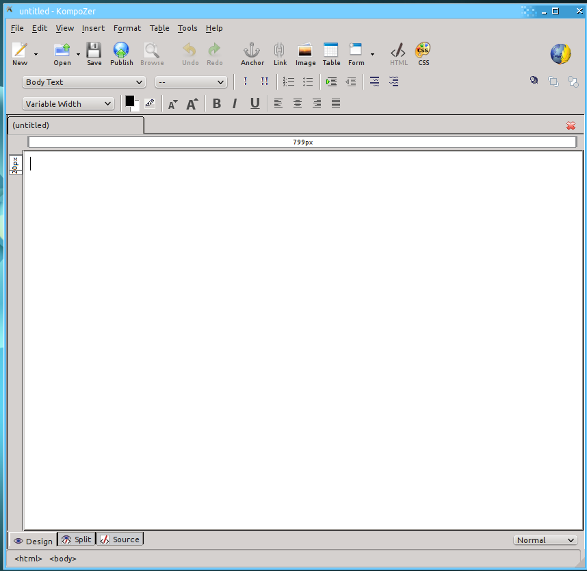
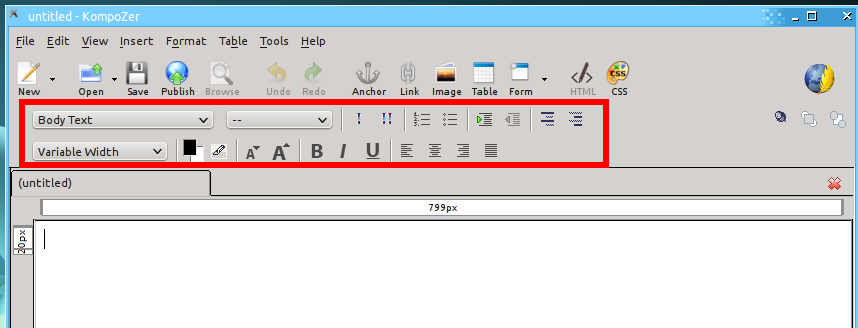
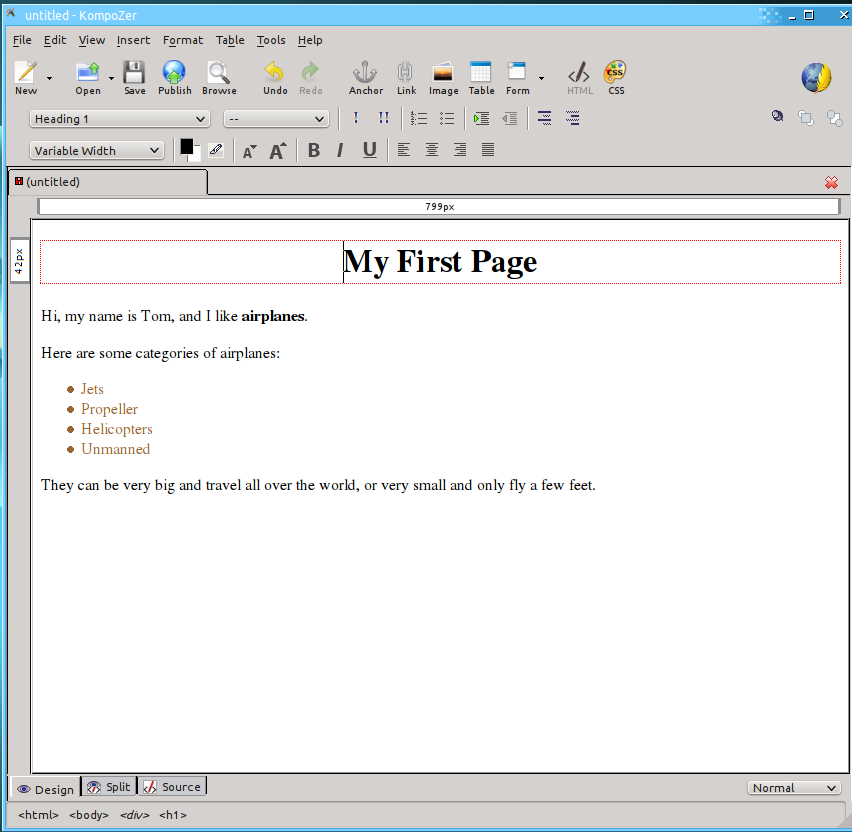
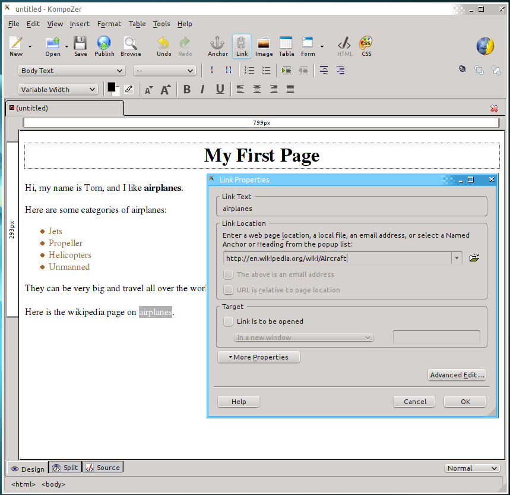
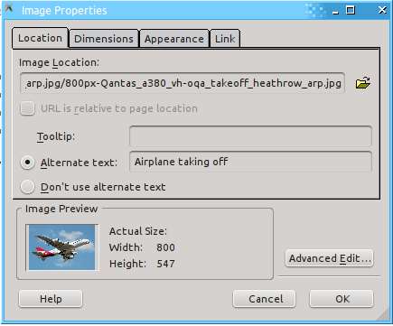
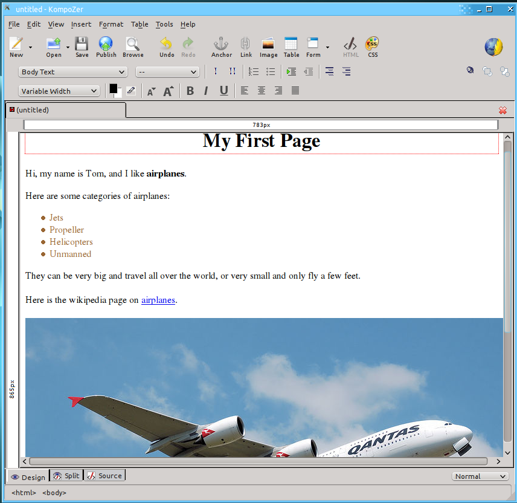
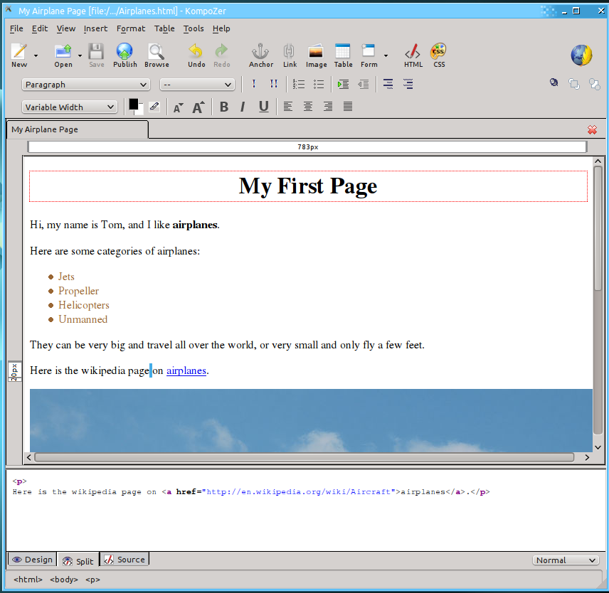
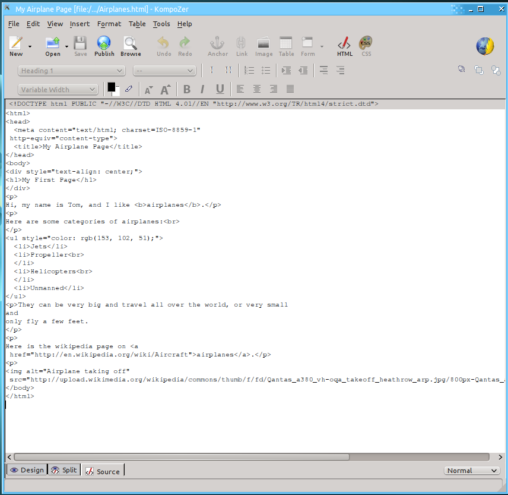

Kompozer
Existen muchos editores que te pueden asistir al
escribir código HTML para una página web. Sin embargo, usualmente la
mayoría requiere que el usuario tenga que trabajar con el código mismo.
En vez de eso, vamos a usar un editor llamado Kompozer que te permite
editar páginas web de forma muy parecida a si estuvieras editando un
documento en Microsoft Word. Este tipo de editor se conoce como "What
You See Is What You Get" (lo que vez es lo que recibes) -- WYSIWG,
pronunciado "wi-si-wig". Este tipo de editor probablemente no será muy
útil para un creador profesional de sitios web, pero es muy bueno para
comenzar porque te permite alternar sin problemas entre el código para
la página y una vista de la página en la forma en que se vería en el
navegador web al ser publicada. Una vez que aprendas a manejar estos
elementos básicos, puedes entonces comenzar a usar otras herramientas
de diseño más avanzadas.

Escribiendo texto y formateo
La forma de escribir texto en tu
página se trabaja de manera muy similar a usar Microsoft Word o
LibreOffice Write. Se escribe en la pantalla principal, y luego se usan
los botones en el menú superior para formatear el texto.

Hay dos líneas de herramientas para el formateo, localizadas debajo
de la barra de herramientas principal y sobre el documento. La primera
línea tiene las siguientes opciones, de izquierda a derecha:
Text
format (Formato de texto) - Te permite especificar que el texto es un
encabezado, parte del cuerpo del texto, o otra parte de tu composición.
Empty Bar - Puedes ignorar esta barra vacía.
Emphasize (Enfatizar) - Añade énfasis al texto (básicamente igual que usar itálicas)
Strong Emphasize (Enfatizar fuerte) - Añade énfasis fuerte al texto (basicamente igual que usar negrilla)
Numbered List (Lista Numérica) - Crea una lista en la que puedes enumerar prociones de texto en secuencia
Bulleted List (Lista de Puntos) - Crea una lista sin ninguna secuencia en particular, por lo que usa puntos en vez de números
Increase Indent (Aumentar Indentado) - Mueve la sección de texto hacia la derecha.
Decrease Indent (Disminuir Indentado) - Mueve la sección de texto hacia la izquierda.
En la segunda línea están las siguientes opciones:
Font (Tipo de Letra) - Escoge el tipo de letera que quieres usar. Ten
cuidado con esto, dado que las páginas web se deben poder ver por todo
tipo de computadores y no todos los computadores tienen los mismos
tipos de letra instalados (en otras palabras, es mejor escoger tipos de
letra que sean comunes y conocidos)
Text/Background Color (Color de Texto/Trasfondo) - Escoge el color para el texto y/o trasfondo.
Highlighter (Marcador) - Marca una proción de texto
Decrease Text Size - Disminuye el tamaño del texto
Increase Text Size - Aumenta el tamaño del texto
Bold - Añade negrilla al texto.
Italics - Añade itálicas al texto.
Underline - Subraya el texto
Left Justify - El texto se alínea a la izquierda
Center - El texto se alínea en el centro
Right Justify - El texto se alínea a la derecha
Align Justified - El texto se estrecha de forma que tanto el margen izquierdo como el derecho se alínean
Ahora escribe un poco de texto sobre tí mismo y sobre algún tema
que te interesa. Usa las varias opciones para formatear tu texto.

Links
Links are the key to any web page. To make a link, select the text that
you want to be the link. Then click the Link button from the main
toolbar. Now you can enter the address of the web page you want
the link to go to. This can be a full URL (called "absolute") like
http://google.com/MyPage.html or it can be a local URL (called
relative) like MyFolder/MyPage.html. Then click OK. That's
all there is to it!
Now go to your example page that you are creating, and add a link to the Wikipedia page for your topic.

Images
Putting an image in a page with Kompozer is similar to a link.
Click the spot where you want the link to go, then click the image
button from the main toolbar. Here you enter the URL for the
image. In addition, every time you put in an image, you should enter
the alternate text for the image. This allows people to read what the
image is about before it loads and allows people who can't see the web
page to still understand what is on the page.
Again adding on to our example page, add an image about your topic of choice.

So now our final page will look something like this:

Now that we have a complete page, we'll need to save it. Just
click the save button up at the top of the window. This will pop up a
dialog asking you what you want the title of your page to be. The title
is what will show up in the tab of your browser window, but not
actually within the page.

View Source/Split
One of the most important parts of any web page editor is the ability
to look at the code for the page. Because HTML is very complicated and
can do many different things, it isn't possible to make an editor like
Kompozer that can do everything graphically. Sometimes an author will
need to go into the code and make changes because it is the only way to
do it. Other times, it is just faster to make changes in the code view.
Either way, it is an important feature to have.
There are two different modes for viewing the code in Kompozer.
The first is the Split view. If you look at the bottom of the screen,
you will see the split tab between the Design (the view we've been
using so far) and Source tabs. This view will show you just the
portion of the code that is relevant to where you have your mouse
cursor. Go put your cursor on the line with your link, and then select
the Split view.

You'll notice here that you can see the <a href="">...</a>
tag for the link, as well as the <p>...</p> tags for this
paragraph. This mode is great for editing a small piece of code in the
page.
The final viewing mode for Kompozer is the source mode. This is the
most powerful mode, and lets you see all the source for the page at one
time. Once you have a good feel for all the tags and code in HTML, it
is very easy to use the source mode to make a lot of changes to the
page, very quickly.

You can see in the source view that all the tags are right there, easy to pick out.
That's about all you need to know to make some basic pages using Kompozer.